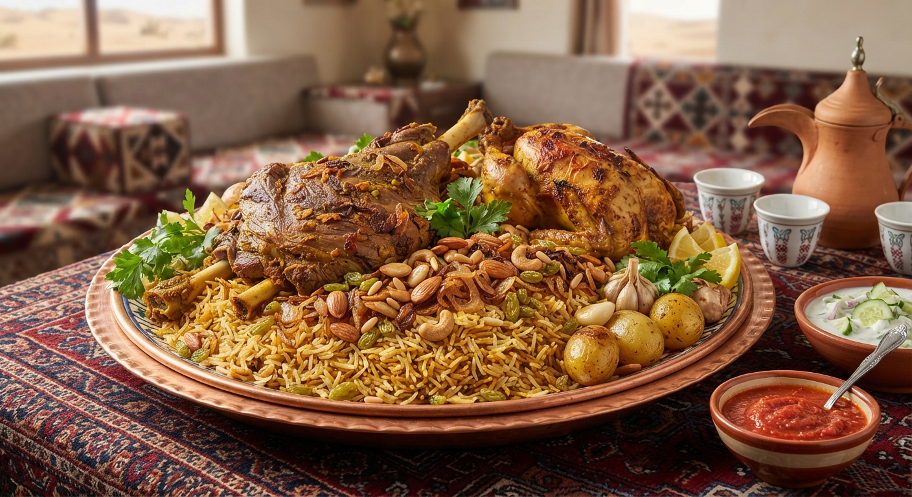

Home
Saudi Chicken Kabsa

Description
Saudi Chicken Kabsa is a wonderfully spiced mixed rice dish originating from Saudi Arabia. It features tender, succulent chicken served over aromatic, long-grain basmati rice cooked with a rich blend of traditional kabsa spices, tomatoes, and dried limes (Loomi), usually garnished with toasted almonds and raisins.
Ingredients
- 1 whole chicken, cut into pieces
- 3 cups Basmati rice, washed and soaked
- 2 large onions, finely chopped
- 3 tomatoes, blended or pureed
- 2 tablespoons tomato paste
- Kabsa spice mix (cardamom, cinnamon, cloves, black pepper, cumin, coriander)
- 2 dried black limes (Loomi)
- Toasted almonds and raisins for garnish
Steps
- Sauté the chopped onions in oil until golden brown, then add the chicken pieces and brown them slightly.
- Add the tomato paste, blended tomatoes, kabsa spices, and dried limes, and stir well.
- Pour in water, cover the pot, and let the chicken simmer until fully cooked. Remove the cooked chicken and set aside.
- Add the soaked basmati rice into the remaining spiced broth and cook until the rice is fluffy and tender.
- Lightly roast the chicken in the oven to give it a nice golden color.
- Serve the aromatic rice on a large platter, top with the roasted chicken, and garnish with toasted almonds and raisins.